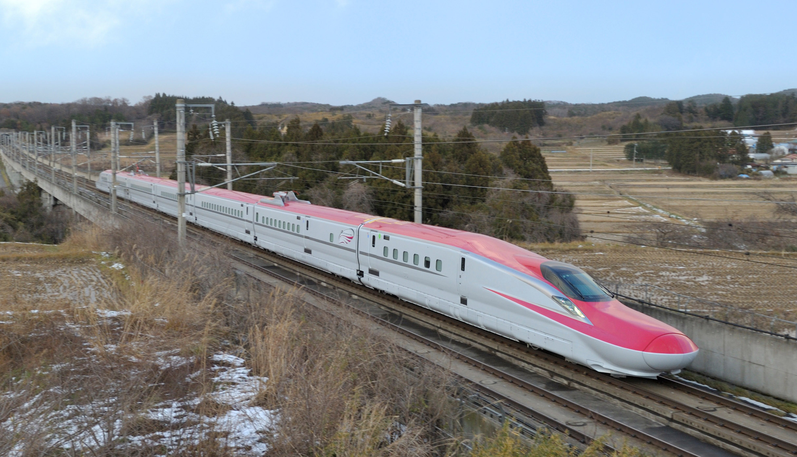
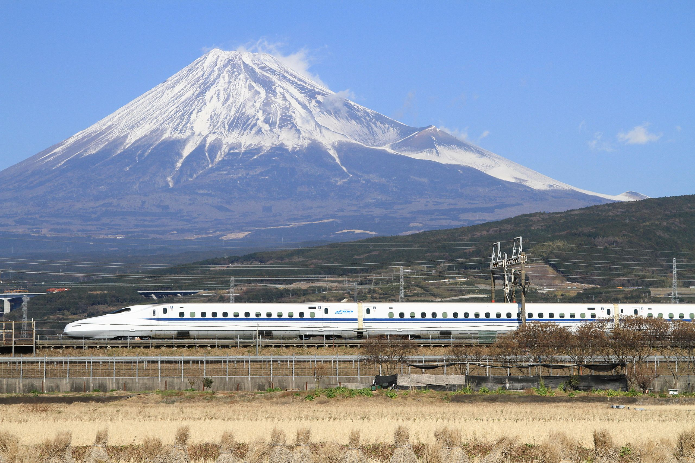
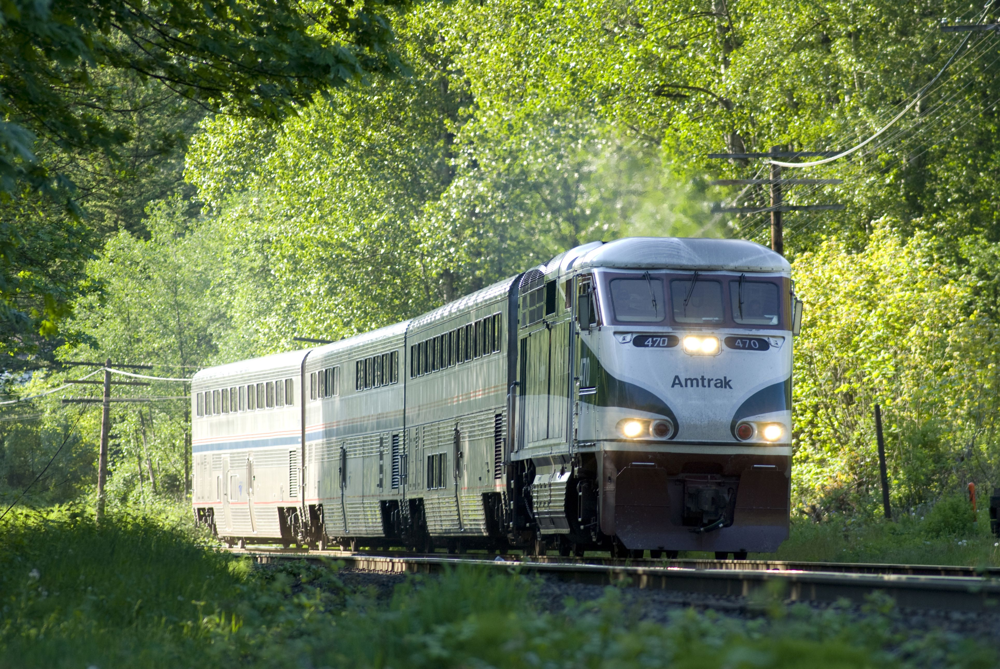
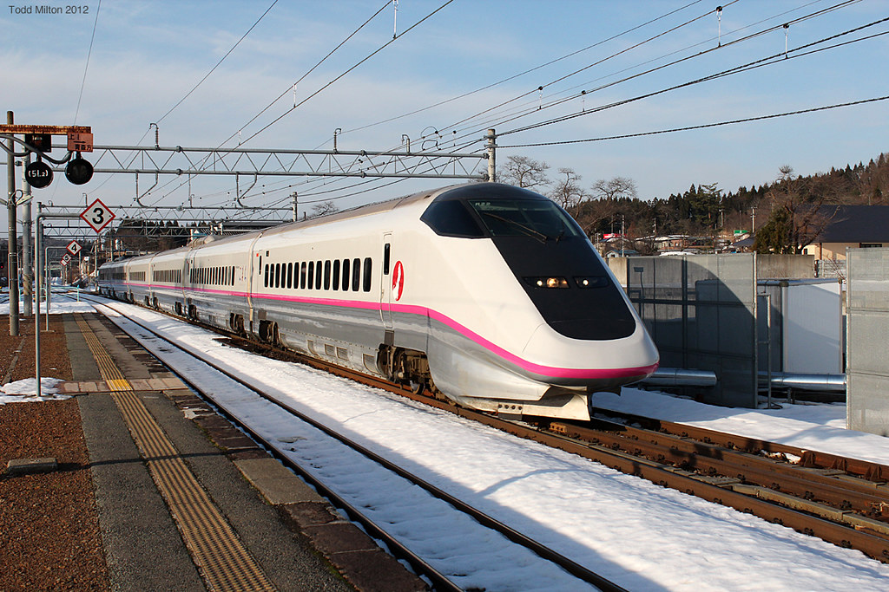
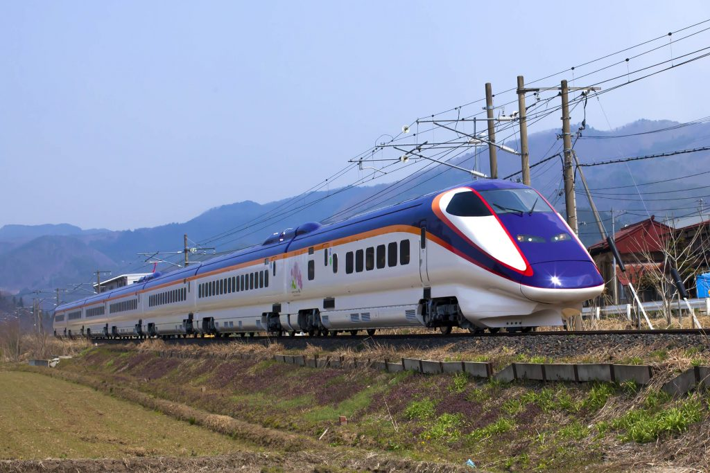
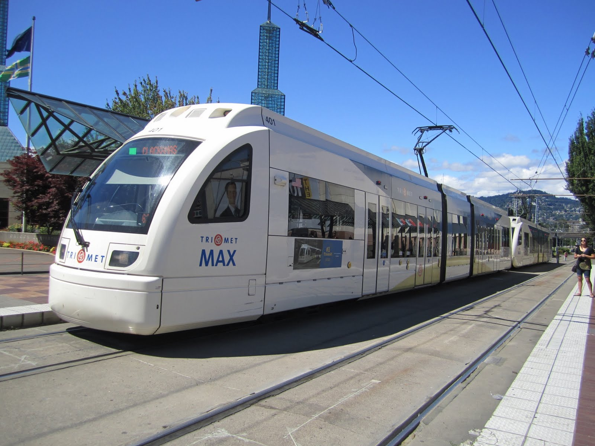

Welcome to my website
An E6 Komachi Shinkansen speeds across the rice fields (acprail).
I'm Noah Roth, here's my story
My journey to deciding what exactly to do in life was no straight line. I've always loved engineering in one form or another, but I could never decide on what exactly I wanted to do. From a young age, my deep interest in trains, planes, and race cars completely absorbed me, and drove my life goals. I was diagnosed with what was then known as Asperger syndrome, but is today considered a part of the Autism spectrum. The only major way this affected my life besides causing my constant obsessions over certain topics - trains et al - was through a lack of social skills. Whether I was actually an introvert or not, my condition ultimately made me one regardless. My mother would often take me to a coffee shop in a strip mall near my house; there was a mural of a typical european town within that coffee shop, where a very young Noah often said he wanted to live. At one point, I got to ride the local train, which ironically sparked a different passion in my soul: Shinkansen. Youtube was just reaching the realm of the common world at this time, and a young Noah managed to weave his way from train video to train video in advance of that special day, initially starting with American trains but meandering towards the far more interesting world of Japanese railways. They seemed almost unreal, these colorful trains shooting between tunnels in a mountainous land of self-discipline and respect.
An N700A Shinkansen passes in front of Mt Fuji (tansaisuketti).
The truth was that America wasn't very stimulating for a train loving kid, as trains are few and far between in the "land of the free." This was why I often dreamed of life in other countries on other continents, far away from my own. My father often told me how many people with my condition overcame their issues, and found success in the field of engineering. This was the main drive behind my interest in engineering. I initially wanted to dive into civil engineering, designing bridges and railway lines, but I was soon bored by the amount of time spent on designing the pouring of concrete. My desire to move away from America rose as I began to learn about the history of the country and the current state it was in. Driving was the only way to get around nearly every city - by design, not by accident - and downtowns were destroyed when freeways were forced through their neighborhoods. Trains were all but exctinct outside New York City, and even my neck of the woods - one of the more "European like" in the country, was not fortunate enough to recieve train service beyond a few trains per day. I started to set my sights on where in Europe I wanted to move, and what I wanted to do.
An Amtrak Cascades train, the "few trains a day" that run from south of Portland to Vancouver BC (Paul).
Somewhere along the way, I started a new stage of my life: Martial Arts. I initially started because I thought it was cool, but I kept going because I fell in love with the art. Karate taught me the aformentioned values that are often reflected in Japan, which was quickly becoming a bit of a holy grail in my life. It wasn't until nearly 8 years later that I hung my gi and called it a career, not for a lack of interest but for a change of ownership in the dojo that resulted in a lose of the discipline and respect that I had felt when I joined the school years earlier. I also started to seriously look at my option for engineering at this time, seeing as civil engineering was no longer practical.
- Petroleum engineering was briefly considered because it was the best paying of the engineering disciplines, but I found myself objecting on moral grounds over personally contributing to climate change if I went into that field.
- Electrical engineering was soon discarded, as my high school engineering classes taught me I couldn't keep up with a circuit beyond a simple design. Seriously, electrical engineers are made of something else.
- Mechanical engineering was a definite option - in hindsight, this should've been explored more as this would've given me an in on working on race cars and trains, but the pay wasn't as great as other disciplines, and critically I found more interest in other things.
- I found that I actually enjoyed some parts of chemical engineering, or at least the chemistry class my high school offered.
Software engineering soon emerged as the optimal solution to my problem; It paid well enough, it could be done remotely (Theoretically I could work and live anywhere with internet), it related to most of my interests in some form or another, and I had always been mildly interested in technology. I wasn't the type who was going out of my way to learn C# or anything like that, but my high school classes soon showed me that I could be up to the task. I feel this is the right choice for me career, and I really hope I'm not proved wrong in the coming weeks.
An E3 Komachi Shinkansen in the snow, my favorite kind of Japanese train. Sadly these particular trains are no longer in service (Sir Pompously).
The story doesn't stop there though. I came from a small town about an hour drive from Portland, Oregon. I used to think this was the city I wanted to live in, as it had a decent sneltram system, was fairly welcoming to cycling (not like the Dutch, though), and had some lovely scenary. Unfortunately, the city's opinion on expanding it's country leading sneltram system had started to change, as they voted down an important extension of the system last year. This was ultimately the straw that broke the camels back, combined with the divisions in America over mundane issues, poor urban planning and lack of options for transportation. I decided I was done with America and going to do everything in my power to leave. I had decided nearly a year earlier that Nederland was the country I was going to aim to get myself to, but this choice wasn't a straight and clear choice. The Netherlands boasts an incredible train system that connects the entire country, incredible biking infrastructure, and good urban planning that creates good cities and a good country. It's only drawback was that I would have to learn a new language if I wanted to stay long term (I do), something that places like England and Ireland didn't have to contend with in my "competition of countries." England was ultimately too car dependent and didn't have interesting enough food - seriously, you invaded half the world in search of spices then decided you liked none of them - and Ireland, despite being beautiful and having a laid back culture, ultimately lost out because it didn't have the biking infrastructure of the Netherlands (Side note: I've realised I can walk to places far easier in Europe than I had initially guessed, so maybe dense cities like Dublin should've been given more credit). France lost because of the complexity of French, Denmark lost because Danish is unintelligable, and the Nordic countries lost because I doubt I could survive with that little sunlight in the winter.
An E3 Tsubasa Shinkansen on the Yamagata mini-Shinkansen (ACPRail).
The biggest suprise to me in this process was the land of the rising sun, Japan, which lost out early because of the countries opinion towards foreigners. Finding an apartment, making friends, everything is hard in Japan if you aren't Japanese, which ultimately meant I had to remove it from my options. It's still an incredible country that I definitely plan on visiting if and when I'm fluent in Japanese (I'm learning really, really slowly) and may even consider living in under the exact right conditions (Probably not going to happen). For now though, it's just a mountainous country with really cool trains. I didn't really have a plan of how to get myself to the Netherlands - it's difficult, nay impossible to get a job as a US citizen for a multitude of reasons. My best hope was to manage to hit the jackpot and create a Youtube channel that could support me, making myself self employed and having a far easier time moving to Nederland. Once again, in hindsight this was a foolish idea that was never going to work, but it did succeed in giving myself a new hobby.
A Type 4 Light Rail Vehicle at Portland Convention Center station (bigblueglobe).
I was mindlessly browsing the web one December evening when I got some urge to take another look at my options for getting myself to Nederland. I hadn't considered the option of going to university in Nederland - I didn't even know it was an option - but something tipped me off that night, and I soon started planning how I could apply to a Dutch college, be accepted to said college, book housing near said college, and get myself over to Nederland in around 8 and a half months. Initially I was looking at the higher tier of University, like in Nijmegen or Maastricht, but those required 4 AP tests. I had taken one of those at the time and was scheduled to take another one in the spring, but that would be only two tests. Additionally, some of the tests the universities wanted were for classes my school didn't even offer. I was clearly not going to make it to these bigger colleges, so I had to start looking elsewhere. I found the wikipedia page for HBO colleges in the Netherlands and checked the websites of every single college to see which even had my area of studies. These were then compared, ranked on things like location, likelyhood of getting housing, tuition, and I then prepared to apply. I initially applied for another college, Saxion in Deventer, but on a whim I also applied to HZ. This would be a saving grace. Saxion failed to reply to any of my emails to them, and their housing - that they required first years stay in - didn't get great reviews. HZ was cool to me because it was near the sea in a quiet corner of the country, and the school seemed responsive to my emails. I had my choice done, and my conditional acceptance came not long after. I finished High School in America, worked through the summer, then got on a plane and navigated my way across the world to Middelburg.